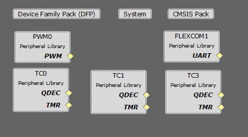

The following project graph shows the MPLAB Harmony components that are included in this application:

Components Used
- PWM Peripheral:
- This peripheral is used to generated three phases synchronous PWM waveforms. Fault functionality is also enabled to switch off the output waveforms asynchronously
- TC Peripherals:
- TC0
- Channel 0 to trigger periodic PWM duty updates.
- Channel 1 to trigger periodic interrupt for current sampling in TC3.
- TC1
- This peripheral is used in quadrature encoder mode for position measurement
- TC3
- Used for sampling the sigma delta modulators signals from LX7720 board.
- FLEXCOM Peripheral:
- The UART is used for X2CScope communication to observe graphs and variable values in run time.